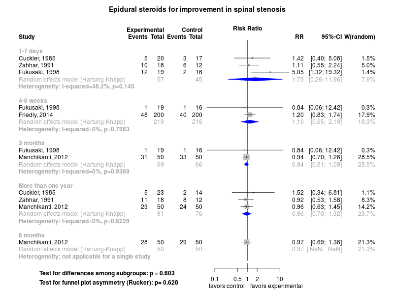
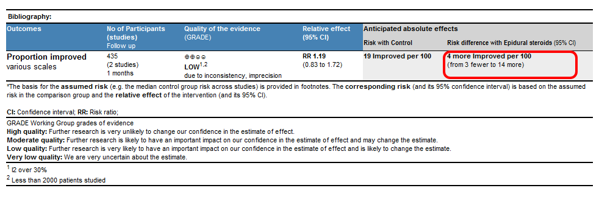

Clinical summary:
This meta-analysis suggests that the clinical intervention is not clearly effective after one week.
Effect noted by Fukusaki at one week from corticosteroids is similar to the effect of local anesthetics reported in their trial and the trial of Cuckler.
However, the quality of evidence is low due to imprecision of results and the heterogeneity or inconsistency of results.
Additional interpretations may be in the references in the 'Cited by' section below.
We included trials of epidural injections of corticosteroids as add-on therapy to usual care.
Methods overview: Studies were abstacted into standardized tables of , and results. This repository updates a previously published meta-analysis.(1) Newer studies included are listed in the references. Rationale for newer trials excluded may be listed at the end of the references. See methods for details.
Results: Details of the studies included are in the:
Below is the forest plot for the primary outcome. Forest plots for other outcomes may be available.
Switch to interactive forest plot

Below is the GRADE Profile for estimated the absolute value and credibility of the outcome(s).

References:
Systematic review(s)
Most recent review at time of last revision of this repository
- Ammendolia C, Stuber KJ, Rok E, Rampersaud R, Kennedy CA, Pennick V, Steenstra IA, de Bruin LK, Furlan AD. Nonoperative treatment for lumbar spinal stenosis with neurogenic claudication. Cochrane Database Syst Rev. 2013 Aug 30;8:CD010712. doi: 10.1002/14651858.CD010712. PMID: 23996271.
Randomized controlled trials
New trial(s) not included in the most recent review above
- Friedly JL, Comstock BA, Turner JA, Heagerty PJ, Deyo RA, Sullivan SD, Bauer Z, Bresnahan BW, Avins AL, Nedeljkovic SS, Nerenz DR, Standaert C, Kessler L, Akuthota V, Annaswamy T, Chen A, Diehn F, Firtch W, Gerges FJ, Gilligan C,
Goldberg H, Kennedy DJ, Mandel S, Tyburski M, Sanders W, Sibell D, Smuck M, Wasan A, Won L, Jarvik JG. A randomized trial of epidural glucocorticoid injections for spinal stenosis. N Engl J Med. 2014 Jul 3;371(1):11-21. doi: 10.1056/NEJMoa1313265. PMID: 24988555.
Trials undergoing review
- Manchikanti L, Cash KA, McManus CD, Pampati V, Fellows B. Fluoroscopic caudal epidural injections with or without steroids in managing pain of lumbar spinal stenosis: one-year results of randomized, double-blind, active-controlled trial. J Spinal Disord Tech. 2012 Jun;25(4):226-34. doi: 10.1097/BSD.0b013e3182160068. PMID: 22652990
Trials excluded - selected list of important trials
- None.
Funding for this review
- None.
Cited by
This repository is cited by:
- WikiDoc contributors. Spinal stenosis medical therapy. WikiDoc. Nov 9, 2014. Available at: http://www.wikidoc.org/index.php/Spinal_stenosis_medical_therapy. Accessed November 9, 2014.
{kind=link}
{kind=link}